Objective: Compare attributions using integrated gradients and activation patching, and investigate the discrepancies between the two methods.
Background:
Both integrated gradients (IG) and activation patching (AP) are used extensively in explainability and interpretability.
IG is path-based: integrates gradients along a path from a baseline to the input.
AP is perturbation-based: directly measures causal effect of replacing activations.
Activation patching can be approximated cheaply using methods inspired by integrated gradients; see Hanna et al (2024)
Gradient-based attribution methods can be used to identify important model components as an alternative to activation patching; see Ferrando and Voita (2024)
Activation patching is often used as the “gold standard” to evaluate attribution methods
Motivation:
Understand when and why do IG and AP disagree: e.g. methodological limitations, or suitability to model tasks, etc.
Investigate if discrepancies help uncover different hidden model behaviours
Understand when and why linear approximations to activation patching fail
Investigate limitations of using activation patching for evaluations: if results are different because of other unknown factors (not just because the method evaluated is “incorrect”)
Some ideas:
Components which might not be identified by activation patching: generic components which are used for both clean and corrupted examples in activation patching
Components which might not be identified by integrated gradients: backup attention heads, components which only influence the output when interacting with other components, i.e. OR circuits
Set-up
We load a pre-trained toy transformer which performs balanced bracket classification. The model has three layers, each with two attention heads and one MLP layer of 56 neurons.
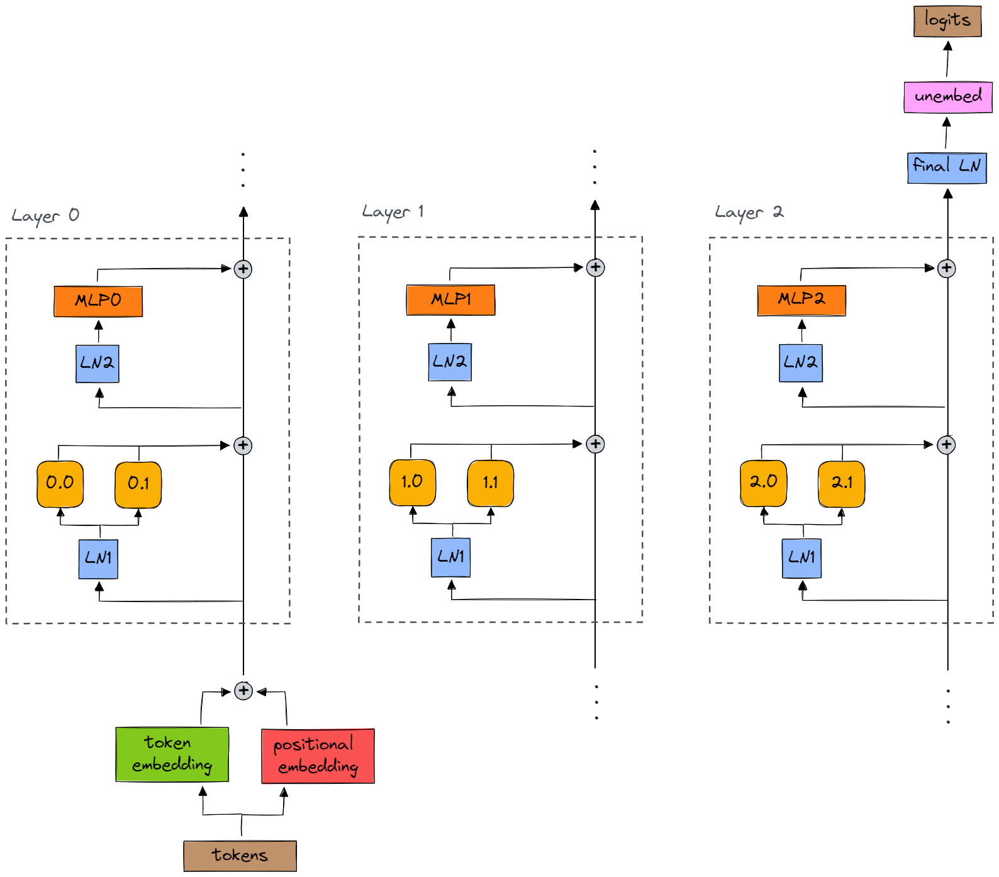
Code
import importlibimport torchfrom captum.attr import LayerIntegratedGradientsimport numpy as npfrom transformer_lens.utils import get_act_namefrom transformer_lens import ActivationCachefrom transformer_lens.hook_points import HookPointimport toy_transformers.toy_bracket_transformer as ttimportlib.reload(tt)from toy_transformers.toy_bracket_transformer import load_toy_bracket_transformer, test_loaded_bracket_modelimport seaborn as snsimport matplotlib.pyplot as plt
Code
tokenizer, model = load_toy_bracket_transformer()
Initial results
Evaluating baselines for integrated gradients
We need to choose an appropriate baseline to calculate Integrated Gradients from. An ideal baseline input will produce a final output which is close to zero, and meaningfully represents a lack of information (see Sundararajan et al. 2017).
Here we test a series of inputs which are feasible baseline inputs, and check their final classification scores.
Code
def run_from_layer_fn(x, original_input, prev_layer):# Force the layer before the target layer to output the given values, i.e. pass the given input into the target layer# original_input value does not matter; useful to keep shapes nice, but its activations will be overwritten output = model.run_with_hooks( original_input, fwd_hooks=[(prev_layer.name, lambda act, hook: x)] ) logits = output[:, 0]return logits.softmax(-1)[:, 1]def compute_layer_to_output_attributions(original_input, layer_input, layer_baseline, target_layer, prev_layer):# Take the model starting from the target layer forward_fn =lambda x: run_from_layer_fn(x, original_input, prev_layer)# Attribute to the target_layer's output ig_embed = LayerIntegratedGradients(forward_fn, target_layer, multiply_by_inputs=True) attributions, approximation_error = ig_embed.attribute(inputs=layer_input, baselines=layer_baseline, attribute_to_layer_input=False, return_convergence_delta=True)print(f"\nError (delta) for {target_layer.name} attribution: {approximation_error.item()}")return attributions
# The prediction at the baseline should be near zero (see Sundararajan et al. 2017)# Here we test a series of inputs which could be a baseline, and check their final classification scoresdef predict_balanced(x): logits = model(x)[:, 0]return logits.softmax(-1)[:, 1].item()balanced_input = tokenizer.tokenize("()()")print("Input: ()()", balanced_input)print("Output:", predict_balanced(balanced_input), "\n")unbalanced_input = tokenizer.tokenize("(()(")print("Input: (()(", unbalanced_input)print("Output:", predict_balanced(unbalanced_input), "\n")all_padding = torch.full_like(balanced_input, tokenizer.PAD_TOKEN)print("Input: PAD PAD PAD PAD PAD PAD", all_padding)print("Output:", predict_balanced(all_padding), "\n")mask = np.isin(balanced_input, [tokenizer.START_TOKEN, tokenizer.END_TOKEN])start_pad_end = balanced_input * mask + tokenizer.PAD_TOKEN * (1- mask)print("Input: START PAD PAD PAD PAD END", start_pad_end)print("Output:", predict_balanced(start_pad_end), "\n")all_zeroes = torch.zeros_like(balanced_input)print("Input: (all zeroes)", all_zeroes)print("Output:", predict_balanced(all_zeroes), "\n")print("Patch zeroes in at target component, e.g. MLP neurons in layer 1\n")prev_layer_hook = get_act_name("post", 1)prev_layer = model.hook_dict[prev_layer_hook]forinputin [balanced_input, unbalanced_input, all_padding, start_pad_end, all_zeroes]: _, test_cache = model.run_with_cache(input) prev_layer_acts = test_cache[prev_layer_hook] prev_layer_acts[:, :] = torch.zeros(prev_layer_acts.size(2))print("Input with patching:", input)print("Output:", run_from_layer_fn(prev_layer_acts, input, prev_layer).item(), "\n")
Input: ()() tensor([[0, 3, 4, 3, 4, 2]])
Output: 0.9999862909317017
Input: (()( tensor([[0, 3, 3, 4, 3, 2]])
Output: 1.8626720702741295e-05
Input: PAD PAD PAD PAD PAD PAD tensor([[1, 1, 1, 1, 1, 1]])
Output: 0.04108979180455208
Input: START PAD PAD PAD PAD END tensor([[0, 1, 1, 1, 1, 2]])
Output: 3.6776664273929782e-06
Input: (all zeroes) tensor([[0, 0, 0, 0, 0, 0]])
Output: 1.5444304153788835e-05
Patch zeroes in at target component, e.g. MLP neurons in layer 1
Input with patching: tensor([[0, 3, 4, 3, 4, 2]])
Output: 0.9983036518096924
Input with patching: tensor([[0, 3, 3, 4, 3, 2]])
Output: 0.00015179907495621592
Input with patching: tensor([[1, 1, 1, 1, 1, 1]])
Output: 0.0017063161358237267
Input with patching: tensor([[0, 1, 1, 1, 1, 2]])
Output: 2.0060035240021534e-05
Input with patching: tensor([[0, 0, 0, 0, 0, 0]])
Output: 6.123560524429195e-06
The [START, PAD, END] token sequence seems to be the best baseline, because it produces a final output which is consistently closest to zero, and this sequence meaningfully represents an input with no information.
Forcing zero activations to be fed into the target component (i.e. patching zeroes in) does not seem to have much of an effect on the final output. This is probably because, even though we overwrite the activations fed into the target component with zeros, the original input continues to be processed due to the residual stream in the transformer model.
Therefore, at the present, it doesn’t seem to really matter whether or not we patch in zero activations before the target component, as long as we use input [START, PAD, END]. Intuitively, it makes sense to patch in zero activations as the baseline for IG, as this is the default baseline.
Basic Integrated Gradients
We perform integrated gradients for a balanced input sequence ()(). The baseline used is zero activations fed into the target components, and the original input as [START, PAD, END].
Noising (a corrupt → clean patch) shows whether the patched activations were necessary to maintain the model behaviour. Therefore we patch corrupted activations into a clean run.
Code
from transformer_lens import HookedTransformer, ActivationCachefrom transformer_lens.hook_points import HookPointclean_input = tokenizer.tokenize("()()") # Balancedcorrupted_input = tokenizer.tokenize("(()(") # Unbalanced# We run on the corrupted prompt with the cache so we store activations to patch in later.corrupted_logits, corrupted_cache = model.run_with_cache(corrupted_input)clean_logits = model(clean_input)# Get probability of overall sequence being balanced (class 1) from position 0clean_answer_logits = clean_logits[0, 0, 1]corrupted_answer_logits = corrupted_logits[0, 0, 1]print(f"Balanced input score: {clean_answer_logits}")print(f"Unbalanced input score: {corrupted_answer_logits}")baseline_diff = (corrupted_answer_logits - clean_answer_logits).item()print(f"Baseline clean-corrupted logit difference: {baseline_diff:.2f}")
Code
# Patch neurons in MLP layersmlp_patch_results = torch.zeros(model.cfg.n_layers, model.cfg.d_mlp)# Patch attention headsattn_patch_results = torch.zeros(model.cfg.n_layers, model.cfg.n_heads)def patch_neuron_hook(activations: torch.Tensor, hook: HookPoint, cache: ActivationCache, neuron_idx: int):# Replace the activations for the target neuron with activations from the cached run. cached_activations = cache[hook.name] activations[:, :, neuron_idx] = cached_activations[:, :, neuron_idx]return activationsdef patch_attn_hook(activations: torch.Tensor, hook: HookPoint, cache: ActivationCache, head_idx: int):# Replace the activations for the target attention head with activations from the cached run. cached_activations = cache[hook.name] activations[:, :, head_idx, :] = cached_activations[:, :, head_idx, :]return activationsfor layer inrange(model.cfg.n_layers):# Activation patching on headsfor head inrange(model.cfg.n_heads): hook_name = get_act_name("result", layer) temp_hook =lambda act, hook: patch_attn_hook(act, hook, corrupted_cache, head)with model.hooks(fwd_hooks=[(hook_name, temp_hook)]): patched_logits = model(clean_input) patched_answer_logits = patched_logits[0, 0, 1] logit_diff = (patched_answer_logits - clean_answer_logits).item()# Normalise result by clean and corrupted logit difference attn_patch_results[layer, head] = logit_diff / baseline_diff# Activation patching on MLP neuronsfor neuron inrange(model.cfg.d_mlp): hook_name = get_act_name("mlp_out", layer) temp_hook =lambda act, hook: patch_neuron_hook(act, hook, corrupted_cache, neuron)with model.hooks(fwd_hooks=[(hook_name, temp_hook)]): patched_logits = model(clean_input) patched_answer_logits = patched_logits[0, 0, 1] logit_diff = (patched_answer_logits - clean_answer_logits).item()# Normalise result by clean and corrupted logit difference mlp_patch_results[layer, neuron] = logit_diff / baseline_diff
# top_mlp_ig_sets = [set(row.tolist()) for row in top_mlp_ig_indices]# top_mlp_patch_sets = [set(row.tolist()) for row in top_mlp_patch_indices]top_mlp_ig_sets =set([tuple(t.tolist()) for t in top_mlp_ig_indices])top_mlp_patch_sets =set([tuple(t.tolist()) for t in top_mlp_patch_indices])intersection = top_mlp_ig_sets.intersection(top_mlp_patch_sets)union = top_mlp_ig_sets.union(top_mlp_patch_sets)jaccard =len(intersection) /len(union)print(f"Jaccard score for MLP neurons: {jaccard}")
Jaccard score for MLP neurons: 0.5625
Code
def indices_set_to_binary_matrix(set_indices, shape): binary_mat = torch.zeros(shape, dtype=torch.long)for i, j in set_indices: binary_mat[i, j] =1return binary_mat
Code
binary_mat_intersections = indices_set_to_binary_matrix(intersection, mlp_ig_results.shape)plt.figure(figsize=(10, 8))plt.imshow(binary_mat_intersections, cmap="Greys")plt.title("Top MLP neurons in both attribution methods")plt.xticks(np.arange(0, 56, 2))plt.xlabel("Neuron Index")plt.yticks([0,1,2])plt.ylabel("Layer")plt.show()
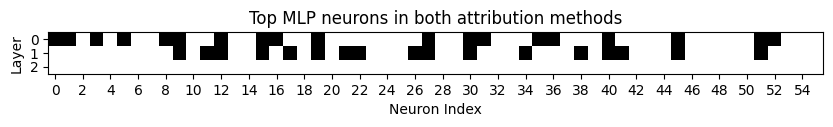
Code
top_mlp_ig_exclusive = top_mlp_ig_sets.difference(top_mlp_patch_sets)binary_mat_ig_exclusive = indices_set_to_binary_matrix(top_mlp_ig_exclusive, mlp_ig_results.shape)plt.figure(figsize=(10, 8))plt.imshow(binary_mat_ig_exclusive, cmap="Greys")plt.title("Top MLP neurons in only integrated gradients")plt.xticks(np.arange(0, 56, 2))plt.xlabel("Neuron Index")plt.yticks([0,1,2])plt.ylabel("Layer")plt.show()
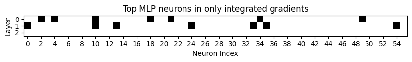
Code
top_mlp_patch_exclusive = top_mlp_patch_sets.difference(top_mlp_ig_sets)binary_mat_patch_exclusive = indices_set_to_binary_matrix(top_mlp_patch_exclusive, mlp_patch_results.shape)plt.figure(figsize=(10, 8))plt.imshow(binary_mat_patch_exclusive, cmap="Greys")plt.title("Top MLP neurons in only causal tracing")plt.xticks(np.arange(0, 56, 2))plt.xlabel("Neuron Index")plt.yticks([0,1,2])plt.ylabel("Layer")plt.show()
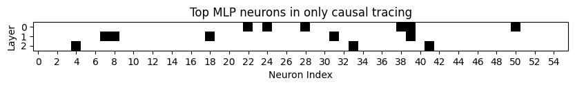
Measuring agreement: Tukey mean-difference plot
Assumptions: the two attribution methods have the same precision, the precision is constant and does not depend on the “true” attribution score, and the difference between the two methods is constant.
NOTE: since the scales of measurement may be different, this may not be applicable.
Code
from sklearn.preprocessing import MaxAbsScalermlp_ig_results_1d = mlp_ig_results.flatten().numpy()mlp_patch_results_1d = mlp_patch_results.flatten().numpy()# Mean-difference plotsmean = np.mean([mlp_ig_results_1d, mlp_patch_results_1d], axis=0)diff = mlp_patch_results_1d - mlp_ig_results_1dmd = np.mean(diff) # Mean of the differencesd = np.std(diff, axis=0) # Standard deviation of the differenceplt.figure(figsize=(10, 6))sns.regplot(x=mean, y=diff, fit_reg=True, scatter=True)plt.axhline(md, color='gray', linestyle='--', label="Mean difference")plt.axhline(md +1.96*sd, color='pink', linestyle='--', label="1.96 SD of difference")plt.axhline(md -1.96*sd, color='lightblue', linestyle='--', label="-1.96 SD of difference")plt.xlabel("Mean of attribution scores per neuron")plt.ylabel("Difference (activation patching - integrated gradients) per neuron")plt.title("Mean-difference plot of attribution scores from integrated gradients and activation patching")plt.legend()plt.show()
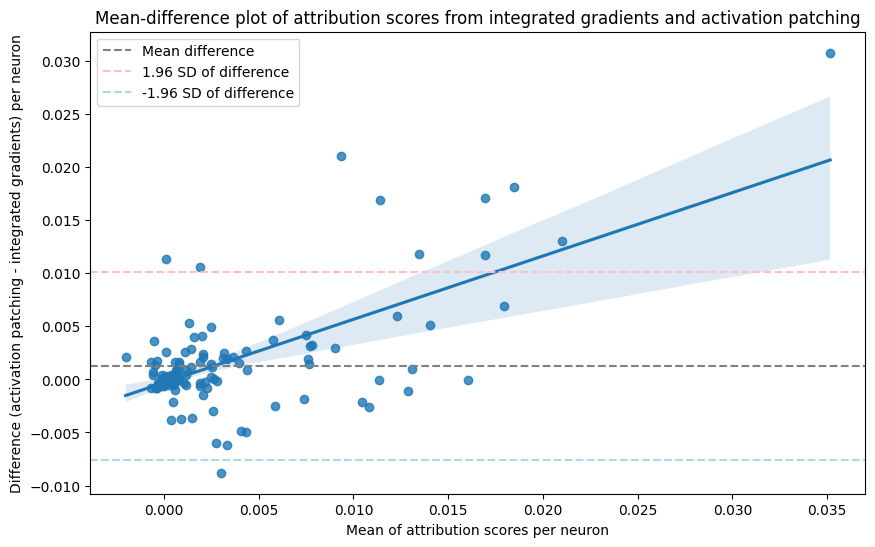
Code
# Mean difference plot with scaled datascaled_mlp_ig_results_1d = MaxAbsScaler().fit_transform(mlp_ig_results_1d.reshape(-1, 1))scaled_mlp_patch_results_1d = MaxAbsScaler().fit_transform(mlp_patch_results_1d.reshape(-1, 1))mean = np.mean([scaled_mlp_ig_results_1d, scaled_mlp_patch_results_1d], axis=0)diff = scaled_mlp_patch_results_1d - scaled_mlp_ig_results_1dmd = np.mean(diff) # Mean of the differencesd = np.std(diff, axis=0) # Standard deviation of the differenceplt.figure(figsize=(10, 6))sns.regplot(x=mean, y=diff, fit_reg=True, scatter=True)plt.axhline(md, color='gray', linestyle='--', label="Mean difference")plt.axhline(md +1.96*sd, color='pink', linestyle='--', label="1.96 SD of difference")plt.axhline(md -1.96*sd, color='lightblue', linestyle='--', label="-1.96 SD of difference")plt.xlabel("Mean of attribution scores per neuron")plt.ylabel("Difference (activation patching - integrated gradients) per neuron")plt.title("Mean-difference plot of scaled attribution scores from integrated gradients and activation patching")plt.legend()plt.show()
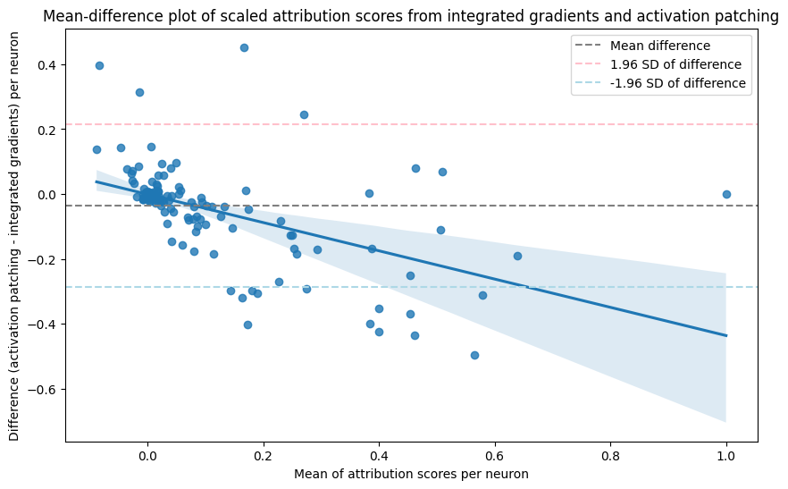
Mean difference is close to zero, indicating a lack of fixed bias: methods tend to agree.
Deviation from the mean difference increases as the average attribution score increases, indicating proportional bias. Methods tend to agree on which neurons contribute less to the output, but disagree more on neurons which are identified as important by one/both of the methods. Specifically, for larger attribution scores, integrated gradients assigns greater attribution scores to neurons than causal tracing.
The limits of agreement (95% of the differences between attribution scores) lie within approximately -0.007 to 0.010. This is a fairly small but still noticeable range of error, given that the difference in attribution scores lies between -0.009 and 0.030.
Difference in scores for attention heads
Code
from sklearn.preprocessing import MaxAbsScalerscaled_attn_ig_results = MaxAbsScaler().fit_transform(attn_ig_results)scaled_attn_patch_results = MaxAbsScaler().fit_transform(attn_patch_results)diff_attn_results = scaled_attn_ig_results - scaled_attn_patch_resultsdiff_attn_results_abs = np.abs(scaled_attn_ig_results) - np.abs(scaled_attn_patch_results)plt.figure(figsize=(10, 5))plt.subplot(1, 2, 1)plt.imshow(diff_attn_results, cmap="RdBu", vmin=-2, vmax=2)plt.title("Difference in attributions for attention heads")plt.xlabel("Head Index")plt.xticks([0,1])plt.ylabel("Layer")plt.yticks([0,1,2])plt.colorbar()plt.subplot(1, 2, 2)plt.imshow(diff_attn_results_abs, cmap="RdBu", vmin=-2, vmax=2)plt.title("Difference in (absolute) attributions for attention heads")plt.xlabel("Head Index")plt.xticks([0,1])plt.ylabel("Layer")plt.yticks([0,1,2])plt.colorbar()plt.tight_layout()plt.show()
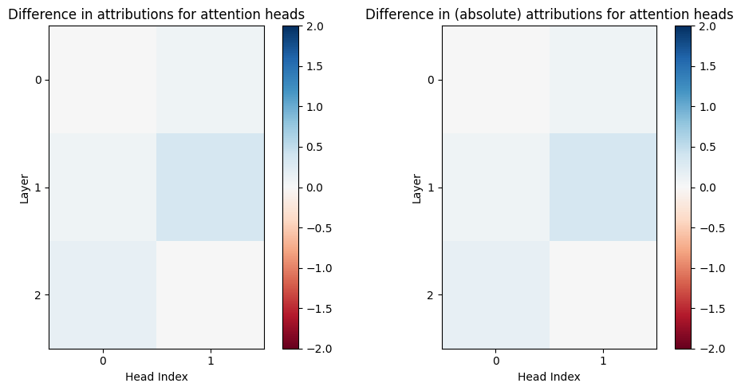
Factors which impact Integrated Gradients
Sensitivity to input: opposite classification
Aim: Verify that results (and implementation) are reasonable.
Repeat IG attribution with unbalanced sequence for comparison.
Gradient attribution scores for neurons and attention heads change when the sequence is unbalanced. Notably, head 2.1 contributes significantly more highly to a positive “unbalanced” classification. This suggests that head 2.1 plays a strong role in the final output. The attribution scores for the other attention heads are less strong, suggesting a weaker role. Overall, this seems to confirm that IG is sensitive to the input as expected.
Average of Integrated Gradients attributions
Observation: The activation patching attribution scores look like they could be the average of the integrated gradients attribution scores for the clean and corrupted inputs.
Aim: Take the average of the integrated gradients scores for balanced and unbalanced inputs.
# Compare difference with alternative inputsmlp_patch_diff = mlp_patch_results - mlp_patch_results_v2bound =max(torch.max(mlp_patch_diff), abs(torch.min(mlp_patch_diff)))plt.figure(figsize=(10, 5))plt.imshow(mlp_patch_diff, cmap='RdBu', vmin=-bound, vmax=bound)plt.title(f"MLP Neuron Causal Tracing: Difference from (()( and ))()")plt.xticks(np.arange(0, 56, 2))plt.xlabel("Neuron Index")plt.yticks([0,1,2])plt.ylabel("Layer")plt.colorbar(orientation="horizontal")plt.show()
Code
# Combine alternative inputsmlp_patch_sum = mlp_patch_results + mlp_patch_results_v2bound =max(torch.max(mlp_patch_sum), abs(torch.min(mlp_patch_sum)))plt.figure(figsize=(10, 5))plt.imshow(mlp_patch_sum, cmap='RdBu', vmin=-bound, vmax=bound)plt.title(f"MLP Neuron Causal Tracing: Sum of (()( and ))()")plt.xticks(np.arange(0, 56, 2))plt.xlabel("Neuron Index")plt.yticks([0,1,2])plt.ylabel("Layer")plt.colorbar(orientation="horizontal")plt.show()
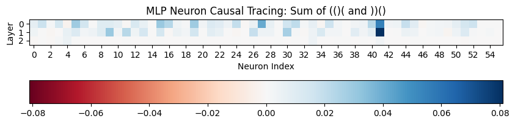
Patching in the opposite direction (denoising)
Hypothesis: activation patching is sensitive to the direction of patching. Patching from clean to corrupted activations should reveal sufficient components to restore model behaviour.
Code
from transformer_lens import HookedTransformer, ActivationCachefrom transformer_lens.hook_points import HookPointclean_input = tokenizer.tokenize("()()") # Balancedcorrupted_input = tokenizer.tokenize("(()(") # Unbalanced# We run on the clean prompt with the cache so we store activations to patch in later.clean_logits, clean_cache = model.run_with_cache(clean_input)corrupted_logits = model(corrupted_input)# Get probability of overall sequence being balanced (class 1) from position 0clean_answer_logits = clean_logits[0, 0, 1]corrupted_answer_logits = corrupted_logits[0, 0, 1]print(f"Balanced input score: {clean_answer_logits}")print(f"Unbalanced input score: {corrupted_answer_logits}")baseline_diff = (corrupted_answer_logits - clean_answer_logits).item()print(f"Baseline clean-corrupted logit difference: {baseline_diff:.2f}")
Patching in the opposite direction highlights similar components to original activation patching. May be possible to get both necessary and sufficient components by patching in both directions, although this is expensive.
Distribution of activations and baselines
Hypothesis: One possible reason for the discrepancy between patching and IG is that the range of activations tested may be from different distributions.
Both gradient methods rely on counterfactual reasoning. IG computes the integral between some baseline (which produces zero output) and given input, whereas causal tracing computes the logit difference between two counterfactual inputs. If the counterfactuals used are different, then this could cause a discrepancy.
I plotted the maximum difference between the corrupted activations and the range of zero to clean activations. The plot indicates that the corrupt activations for many MLP neurons lie outside of the range, suggesting that there could be out-of-distribution issues going on.
Code
# If the corrupt activations for tracing are outside of the bounds for gradient attribution, measure the distancedef measure_distance_from_bound(bounds, value): lower_bound =min(bounds) upper_bound =max(bounds)if value < lower_bound:return value - lower_boundif value > upper_bound:return value - upper_boundreturn0clean_input = tokenizer.tokenize("()()") # Balancedcorrupted_input = tokenizer.tokenize("(()(") # Unbalancedclean_logits, clean_cache = model.run_with_cache(clean_input)corrupted_logits, corrupted_cache = model.run_with_cache(corrupted_input)mlp_distance = torch.zeros((model.cfg.n_layers, model.cfg.d_mlp))attn_distance = torch.zeros((model.cfg.n_layers, model.cfg.n_heads))for layer inrange(model.cfg.n_layers):# Get distance for attention heads hook_name = get_act_name("result", layer) layer_corrupt_acts = corrupted_cache[hook_name] layer_clean_acts = clean_cache[hook_name]# Go over each attention head and take the maximum distancefor head inrange(model.cfg.n_heads): head_corrupt_acts = layer_corrupt_acts.max(dim=3)[0].max(dim=1)[0][0, head] head_clean_acts = layer_clean_acts.mean(dim=3).mean(dim=1)[0, head]# The clean activations are what is used for integrated gradients distance = measure_distance_from_bound(bounds=(0, head_clean_acts), value=head_corrupt_acts) max_distance =max(distance, max_distance) attn_distance[layer, head] = max_distance# Get distance for MLP neurons hook_name = get_act_name("mlp_out", layer) layer_corrupt_acts = corrupted_cache[hook_name] layer_clean_acts = clean_cache[hook_name]for neuron_idx inrange(model.cfg.d_mlp): neuron_corrupt_acts = layer_corrupt_acts[0, :, neuron_idx] neuron_clean_acts = layer_clean_acts[0, :, neuron_idx]# Go over each token and take the maximum distance max_distance =0for i inrange(neuron_clean_acts.size(-1)):# The clean activations are what is used for integrated gradients distance = measure_distance_from_bound(bounds=(0, neuron_clean_acts[i]), value=neuron_corrupt_acts[i]) max_distance =max(distance, max_distance) mlp_distance[layer, neuron_idx] = max_distance
Qualitatively, for MLP neurons, the corrupt activations are outside of the range of zero to clean activations in areas highlighted by both methods. For attention heads, most of the corrupt attention head activations seem to be outside of IG bounds.
Baseline as corrupted activations
Instead of using zero as the baseline activation, use the activation from the corrupt input in causal tracing.
Running integrated gradients with the baselines as the corrupt activations seems to bring results closer to causal tracing for MLP neurons, but further away for attention heads. The MLP neuron attribution scores still have minor disagreements.
Code
# Plot the attribution scores against each other. Correlation: y = x.x = mlp_ig_corrupt_baseline_results.flatten().numpy()y = mlp_patch_results.flatten().numpy()plt.figure(figsize=(6,6))sns.regplot(x=x, y=y)plt.xlabel("Integrated Gradients with Corrupted Baseline MLP Attribution Scores")plt.ylabel("Activation Patching MLP Attribution Scores")plt.show()print(f"Correlation coefficient between IG with corrupted baseline and AP attributions for neurons: {np.corrcoef(x, y)[0, 1]}")x = attn_ig_corrupt_baseline_results.flatten().numpy()y = attn_patch_results.flatten().numpy()plt.figure(figsize=(8,6))sns.regplot(x=x, y=y)plt.xlabel("Integrated Gradients with Corrupted Baseline Attention Attribution Scores")plt.ylabel("Causal Tracing Attention Attribution Scores")plt.show()print(f"Correlation coefficient between IG with corrupted baseline and AP attributions for attention: {np.corrcoef(x, y)[0, 1]}")
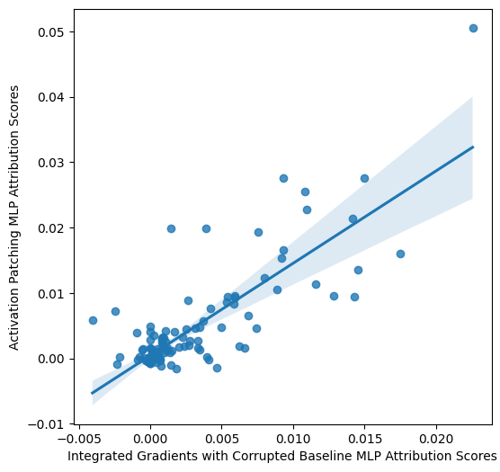
Correlation coefficient between IG with corrupted baseline and AP attributions for neurons: 0.823746490811176
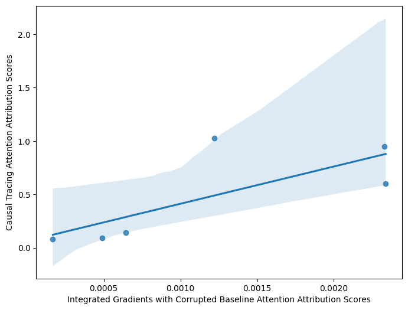
Correlation coefficient between IG with corrupted baseline and AP attributions for attention: 0.7527592281308121
Code
top_mlp_corrupt_baseline_ig_indices, _ = get_attributions_above_threshold(mlp_ig_corrupt_baseline_results, 0.3)top_mlp_corrupt_baseline_ig_sets =set([tuple(t.tolist()) for t in top_mlp_corrupt_baseline_ig_indices])top_mlp_patch_sets =set([tuple(t.tolist()) for t in top_mlp_patch_indices])intersection = top_mlp_corrupt_baseline_ig_sets.intersection(top_mlp_patch_sets)union = top_mlp_corrupt_baseline_ig_sets.union(top_mlp_patch_sets)jaccard =len(intersection) /len(union)print(f"Jaccard score for MLP neurons using IG with corrupted baseline: {jaccard}")
Jaccard score for MLP neurons using IG with corrupted baseline: 0.5757575757575758
Activation patching with IG zero baseline
Instead of patching in activation from unbalanced input, patch in zero ablation (same baseline as integrated gradients).
Code
from transformer_lens import HookedTransformer, ActivationCachefrom transformer_lens.hook_points import HookPointfrom collections import defaultdictclean_input = tokenizer.tokenize("()()") # Balancedclean_logits = model(clean_input)clean_answer_logits = clean_logits[0, 0, 1]zero_attn_cache = defaultdict(lambda: torch.zeros((1, 1, model.cfg.n_heads, 1))) # Return zero for any attention headzero_mlp_cache = defaultdict(lambda: torch.zeros((1, 1, model.cfg.d_mlp))) # Return zero for any MLP neuron
bound =max(torch.max(mlp_patch_zero_baseline_results), abs(torch.min(mlp_patch_zero_baseline_results)))plt.figure(figsize=(10, 5))plt.imshow(mlp_patch_zero_baseline_results.detach(), cmap='RdBu', vmin=-bound, vmax=bound)plt.title("MLP Neuron Causal Tracing: Zero -> Clean")plt.xticks(np.arange(0, 56, 2))plt.xlabel("Neuron Index")plt.yticks([0,1,2])plt.ylabel("Layer")plt.colorbar(orientation="horizontal")plt.show()bound =max(torch.max(attn_patch_zero_baseline_results), abs(torch.min(attn_patch_zero_baseline_results)))plt.figure(figsize=(10, 5))plt.imshow(attn_patch_zero_baseline_results.detach(), cmap='RdBu', vmin=-bound, vmax=bound)plt.title("Attention Head Causal Tracing: Zero -> Corrupted")plt.xlabel("Head Index")plt.xticks([0,1])plt.ylabel("Layer")plt.yticks([0,1,2])plt.colorbar()plt.show()
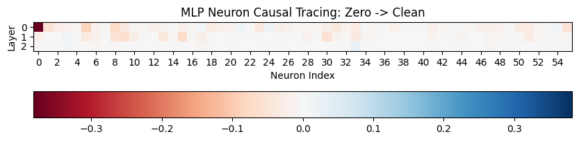
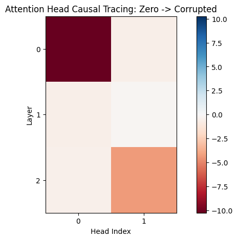
Performing causal tracing by ablating the components with zero activations produces a very different attribution score distribution. This might not be meaningful since zero ablations are most likely out-of-distribution wrt the model’s typical activation patterns.
Patching with mean value of corrupted dataset
Code
import jsonfrom toy_transformers.brackets_datasets import BracketsDataset# Get corrupted datasetswithopen("toy_transformers/brackets_data.json") as f: data_tuples = json.load(f) data_tuples = data_tuples[:5000] data = BracketsDataset(data_tuples)corrupted_dataset = data.toks[~data.isbal]corrupted_dataset_answer_logits, corrupted_dataset_cache = model.run_with_cache(corrupted_dataset)
Code
def patch_mean_neuron_hook(activations: torch.Tensor, hook: HookPoint, cache: ActivationCache, neuron_idx: int):# Replace the activations for the target neuron with activations from the cached run. cached_activations = cache[hook.name].mean(dim=0) activations[:, :, neuron_idx] = cached_activations[:, neuron_idx]return activationsdef patch_mean_attn_hook(activations: torch.Tensor, hook: HookPoint, cache: ActivationCache, head_idx: int):# Replace the activations for the target attention head with activations from the cached run. cached_activations = cache[hook.name].mean(dim=0) activations[:, :, head_idx, :] = cached_activations[:, head_idx, :]return activations
I performed casual tracing by ablating components with the mean activation for a dataset of corrupted outputs. The attribution results look different from existing IG and causal tracing results with the corrupt baseline (()(. This is the sharpest attribution result so far - could potentially be the most generalisable?
Ablation studies
We evaluate the discrepancy between the two methods using ablation studies, to investigate possible causes of the different attributions.
Code
import jsonfrom toy_transformers.brackets_datasets import BracketsDatasetfrom toy_transformers.toy_bracket_transformer import test_loaded_bracket_model_on_dataset# Get clean and corrupted datasetswithopen("toy_transformers/brackets_data.json") as f: data_tuples = json.load(f) data_tuples = data_tuples[:6000] data = BracketsDataset(data_tuples)clean_dataset = data.toks[data.isbal]clean_is_balanced = torch.ones(clean_dataset.size(0))corrupted_dataset = data.toks[~data.isbal]corrupted_is_balanced = torch.zeros(corrupted_dataset.size(0))_, corrupted_dataset_cache = model.run_with_cache(corrupted_dataset)
Code
# Evaluate baseline performance on sample datasetbaseline_logits, baseline_performance = test_loaded_bracket_model_on_dataset(model, clean_dataset, clean_is_balanced)print("Original model performance on positive samples:", baseline_performance.item())
Model got 2732 out of 2732 training examples correct!
Original model performance on positive samples: 1.0
Code
_, baseline_corrupted_performance = test_loaded_bracket_model_on_dataset(model, corrupted_dataset, corrupted_is_balanced)print("Original model performance on negative samples:", baseline_corrupted_performance.item())
Model got 3268 out of 3268 training examples correct!
Original model performance on negative samples: 1.0
Model got 0 out of 2732 training examples correct!
Performance when ablating all attention heads: tensor(0.)
Ablation studies for integrated gradients
Evaluate faithfulness: when “unimportant” neurons and attention heads are ablated, performance should not be affected.
Code
# Evaluate faithfulness: when "unimportant" neurons and attention heads are ablated, performance should not be affectedig_isolation_hooks = []set_top_mlp_ig_indices =set([tuple(t.tolist()) for t in top_mlp_ig_indices])print(f"Neurons to keep: {len(set_top_mlp_ig_indices)} out of {model.cfg.n_layers * model.cfg.d_mlp}")set_ig_heads =set([(0,0), (1,0), (2,0), (2,1)])for layer inrange(model.cfg.n_layers): mlp_hook_point = get_act_name("mlp_out", layer) ig_isolation_hooks.append((mlp_hook_point, lambda act, hook: ablate_neuron_hook(act, hook, corrupted_dataset_cache, set_top_mlp_ig_indices))) attn_hook_point = get_act_name("result", layer) ig_isolation_hooks.append((attn_hook_point, lambda act, hook: ablate_attn_hook(act, hook, corrupted_dataset_cache, set_ig_heads)))with model.hooks(fwd_hooks=ig_isolation_hooks): ig_isolated_logits, ig_isolated_performance = test_loaded_bracket_model_on_dataset(model, clean_dataset, clean_is_balanced)print(ig_isolated_performance)
Neurons to keep: 50 out of 168
Model got 2614 out of 2732 training examples correct!
tensor(0.9568)
Evaluate completeness: when “important” neurons are ablated, performance should be affected.
Code
# Get neurons to keep: complementary to neurons to keepdef get_complementary_neuron_indices(neuron_indices: torch.Tensor, mlp_shape: tuple): mask = torch.ones(mlp_shape)for idx in neuron_indices: layer_idx, neuron_idx =tuple(idx)if layer_idx < mlp_shape[0] and neuron_idx < mlp_shape[1]: mask[layer_idx, neuron_idx] =0.0 complementary_indices = torch.nonzero(mask)return complementary_indices# Evaluate completeness: when "important" neurons are ablated, performance should be affectedmlp_ig_excluded_indices = get_complementary_neuron_indices(top_mlp_ig_indices, (model.cfg.n_layers, model.cfg.d_mlp))set_mlp_ig_excluded_indices =set([tuple(t.tolist()) for t in mlp_ig_excluded_indices])print(f"Neurons to keep: {len(set_mlp_ig_excluded_indices)} out of {model.cfg.n_layers * model.cfg.d_mlp}")set_ig_excluded_heads = [(0,1), (1,1)]ig_ablation_hooks = []for layer inrange(model.cfg.n_layers): hook_point = get_act_name("mlp_out", layer) ig_ablation_hooks.append((hook_point, lambda act, hook: ablate_neuron_hook(act, hook, corrupted_dataset_cache, set_neurons_to_keep=set_mlp_ig_excluded_indices))) attn_hook_point = get_act_name("result", layer) ig_ablation_hooks.append((attn_hook_point, lambda act, hook: ablate_attn_hook(act, hook, corrupted_dataset_cache, set_ig_excluded_heads)))with model.hooks(fwd_hooks=ig_ablation_hooks): _, ig_ablated_performance = test_loaded_bracket_model_on_dataset(model, clean_dataset, clean_is_balanced)print(ig_ablated_performance)
Neurons to keep: 118 out of 168
Model got 0 out of 2732 training examples correct!
tensor(0.)
Ablation studies on causal tracing
Evaluate faithfulness: when “unimportant” neurons and attention heads are ablated, performance should not be affected
Code
# Evaluate faithfulness: when "unimportant" neurons and attention heads are ablated, performance should not be affectedpatch_isolation_hooks = []set_top_mlp_patch_indices =set([tuple(t.tolist()) for t in top_mlp_patch_indices])print(f"Neurons to keep: {len(set_top_mlp_patch_indices)} out of {model.cfg.n_layers * model.cfg.d_mlp}")set_patch_heads =set([(0,0), (1,0), (2,0), (2,1)])for layer inrange(model.cfg.n_layers): mlp_hook_point = get_act_name("mlp_out", layer) patch_isolation_hooks.append((mlp_hook_point, lambda act, hook: ablate_neuron_hook(act, hook, corrupted_dataset_cache, set_top_mlp_patch_indices))) attn_hook_point = get_act_name("result", layer) patch_isolation_hooks.append((attn_hook_point, lambda act, hook: ablate_attn_hook(act, hook, corrupted_dataset_cache, set_patch_heads)))with model.hooks(fwd_hooks=patch_isolation_hooks): patch_isolated_logits, patch_isolated_performance = test_loaded_bracket_model_on_dataset(model, clean_dataset, clean_is_balanced)print(patch_isolated_performance)
Neurons to keep: 50 out of 168
Model got 2519 out of 2732 training examples correct!
tensor(0.9220)
Evaluate completeness: when “important” neurons are ablated, performance should be affected
Code
# Evaluate completeness: when "important" neurons are ablated, performance should be affectedpatch_ig_excluded_indices = get_complementary_neuron_indices(top_mlp_patch_indices, (model.cfg.n_layers, model.cfg.d_mlp))set_mlp_patch_excluded_indices =set([tuple(t.tolist()) for t in patch_ig_excluded_indices])print(f"Neurons to keep: {len(set_mlp_patch_excluded_indices)} out of {model.cfg.n_layers * model.cfg.d_mlp}")set_patch_excluded_heads = [(0,1), (1,1)]patch_ablation_hooks = []for layer inrange(model.cfg.n_layers): hook_point = get_act_name("mlp_out", layer) patch_ablation_hooks.append((hook_point, lambda act, hook: ablate_neuron_hook(act, hook, corrupted_dataset_cache, set_neurons_to_keep=set_mlp_patch_excluded_indices))) attn_hook_point = get_act_name("result", layer) patch_ablation_hooks.append((attn_hook_point, lambda act, hook: ablate_attn_hook(act, hook, corrupted_dataset_cache, set_patch_excluded_heads)))with model.hooks(fwd_hooks=patch_ablation_hooks): _, patch_ablated_performance = test_loaded_bracket_model_on_dataset(model, clean_dataset, clean_is_balanced)print(patch_ablated_performance)
Neurons to keep: 118 out of 168
Model got 0 out of 2732 training examples correct!
tensor(0.)
Analysis of ablation studies
Code
plt.title("Model performance under corruption of different components")plt.xlabel("Corrupted model components")plt.ylabel("Model performance on bracket classification")plt.bar( ["None", "All neurons", "All attention heads", "All heads and neurons"], [baseline_performance, mlp_ablate_all_performance, attn_ablate_all_performance, model_ablate_all_performance])plt.xticks(rotation=-15)plt.show()
Code
plt.title("Model performance under corruption of components with high attribution scores")plt.xlabel("Attribution method used to identify components for corruption")plt.ylabel("Model performance on bracket classification")plt.bar( ["All heads + neurons", "Integrated Gradients", "Activation patching"], [model_ablate_all_performance, ig_ablated_performance, patch_ablated_performance], color=['grey', 'tab:blue', 'tab:blue'])plt.ylim(0, 1)plt.show()
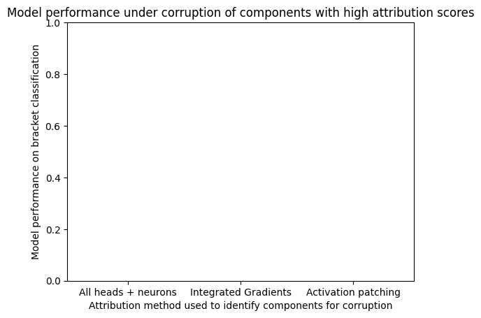
Code
plt.title("Model performance under corruption of components with low attribution scores")plt.xlabel("Attribution method used to identify components to preserve")plt.ylabel("Model performance on bracket classification")plt.bar( ["Original model", "Integrated Gradients", "Activation patching"], [baseline_performance, ig_isolated_performance, patch_isolated_performance], color=['grey', 'tab:blue', 'tab:blue'])plt.show()
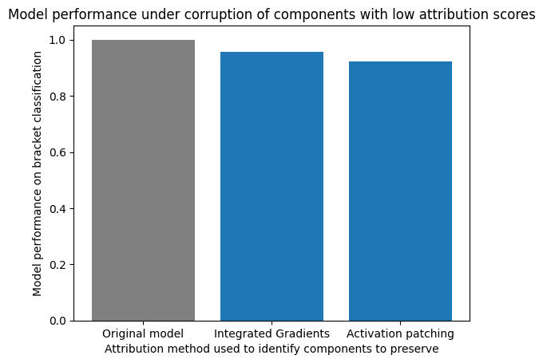
Preliminary ablation studies show that integrated gradients and activation patching both find important circuit components, as corrupting identified components reduces performance to 0.
However, activation patching may identify an over-complete circuit. For activation patching, corrupting all components outside of the identified neurons and attention heads reduces performance more than integrated gradients.
One explanation is that activation patching only picks up components which are important to the specific circuit under examination, whereas integrated gradients identifies components which are overall important to the model.
Another explanation (more likely) is that the dataset used for evaluations is small, and minor differences in performance are not significant.
Gradual ablation
Instead of taking the top 20% components and corrupting them all, we gradually corrupt components from the lowest attribution scores first to the highest attribution scores, and measure the drop in performance.
# Gradually corrupt components with lowest attribution scoresgradual_ig_corruption_performance = []# Preserve all neurons at first, then deleteset_gradual_neurons_to_keep =set([(layer, pos) for layer inrange(model.cfg.n_layers) for pos inrange(model.cfg.d_mlp)])set_gradual_attn_to_keep =set([(layer, pos) for layer inrange(model.cfg.n_layers) for pos inrange(model.cfg.n_heads)])model.clear_contexts()model.remove_all_hook_fns()for idx inrange(len(sorted_indices_2d)): keep_type, keep_layer, keep_idx = sorted_indices_2d[idx]if keep_type == NEURON_LABEL: set_gradual_neurons_to_keep.remove((keep_layer, keep_idx)) mlp_hook_point = get_act_name("mlp_out", keep_layer) model.add_hook(mlp_hook_point, lambda act, hook: ablate_neuron_hook(act, hook, corrupted_dataset_cache, set_gradual_neurons_to_keep.copy()))else: set_gradual_attn_to_keep.remove((keep_layer, keep_idx)) attn_hook_point = get_act_name("result", keep_layer) model.add_hook(attn_hook_point, lambda act, hook: ablate_attn_hook(act, hook, corrupted_dataset_cache, set_gradual_attn_to_keep.copy())) _, performance = test_loaded_bracket_model_on_dataset(model, clean_dataset[:500], clean_is_balanced[:500])print(performance) gradual_ig_corruption_performance.append(performance)model.remove_all_hook_fns()
Code
plt.plot(gradual_ig_corruption_performance)plt.title("Gradual corruption starting with lowest IG attribution score")plt.xlabel("Number of corrupted components")plt.ylabel("Performance on balanced bracket classification")plt.show()
plt.plot(gradual_patch_corruption_performance)plt.title("Gradual corruption starting with lowest activation patching attribution score")plt.xlabel("Number of corrupted components")plt.ylabel("Performance on balanced bracket classification")plt.show()
Next steps and further ideas
Investigate out-of-distribution error idea further
Why do attention head scores change so dramatically?
TBF approximations to activation patching use IG with clean/corrupt baselines
Investigate alternative hypotheses for discrepancies in results
Identify components which are always highlighted as important by IG
Generic components: results of IG attribution might match the cumulative scores from causal tracing with a range of different counterfactual activations.
Complete gradual ablation for causal tracing, and investigate performance results
Since both methods rely on counterfactual reasoning, I wonder if there is some way to generate counterfactual inputs for a target component, such that causal tracing can identify that target component. - Connect counterfactuals and activation patching templates - It would be difficult to extract the original counterfactual input, because the space of activation possibilities at a target layer is infinite.
Future steps: - Extrapolate to full-sized transformer model - Test alternative attribution methods